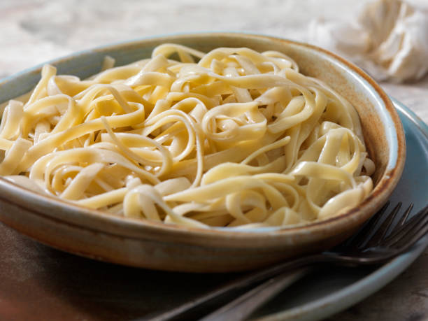

Buttered Noodles

This truly is a recipe of all time.
A meal for a person that has nothing to lose.
This recipe is based off of Allrecipes' recipe.
Ingredients
- 1 box of fettucini
- 84 grams of butter, cut into pieces
- 30 grams of grated Parmesan cheese
- Salt and ground black pepper
Steps
- Cook the pasta according to the package instruction.
- Once the pasta is al dente, drain the pasta. Keep about 230ml of the pasta water.
- Mix the rest of the ingredients into the pasta. Add some pasta water if it is too dry to mix.
- Serve.